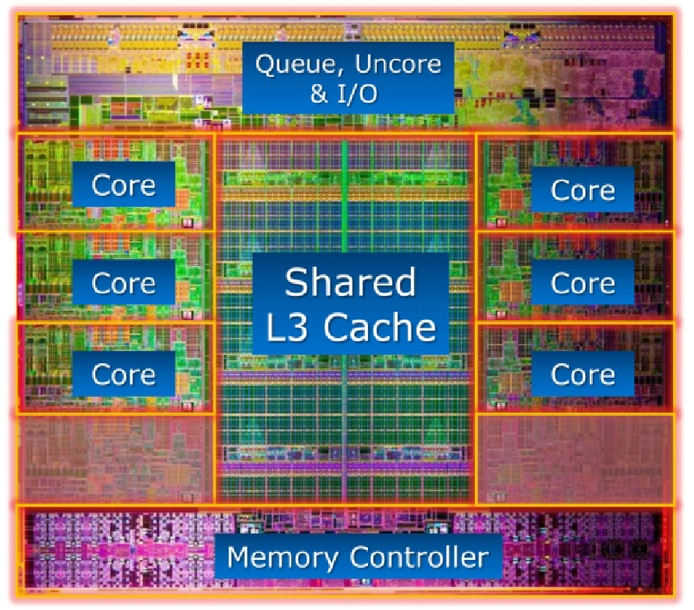

Julia Version 1.9.3
Commit bed2cd540a1 (2023-08-24 14:43 UTC)
Build Info:
Official https://julialang.org/ release
Platform Info:
OS: macOS (x86_64-apple-darwin22.4.0)
CPU: 8 × Intel(R) Core(TM) i5-8279U CPU @ 2.40GHz
WORD_SIZE: 64
LIBM: libopenlibm
LLVM: libLLVM-14.0.6 (ORCJIT, skylake)
Threads: 2 on 8 virtual coresNumerical Linear Algebra
Advanced Statistical Computing
Joong-Ho Won
Seoul National University
October 2023
Introduction
- Topics in numerical linear algebra:
- BLAS
- solve linear equations \(\mathbf{A} \mathbf{x} = \mathbf{b}\)
- regression computations \(\mathbf{X}^T \mathbf{X} \beta = \mathbf{X}^T \mathbf{y}\)
- eigen-problems \(\mathbf{A} \mathbf{x} = \lambda \mathbf{x}\)
- generalized eigen-problems \(\mathbf{A} \mathbf{x} = \lambda \mathbf{B} \mathbf{x}\)
- singular value decompositions \(\mathbf{A} = \mathbf{U} \Sigma \mathbf{V}^T\)
- iterative methods for numerical linear algebra
- BLAS
- Except for the iterative methods, most of these numerical linear algebra tasks are implemented in the BLAS and LAPACK libraries. They form the building blocks of most statistical computing tasks (optimization, MCMC).
- Our major goal (or learning objectives) is to
- know the complexity (flop count) of each task
- be familiar with the BLAS and LAPACK functions (what they do)
- do not re-invent the wheel by implementing these dense linear algebra subroutines by yourself
- understand the need for iterative methods
- apply appropriate numerical algebra tools to various statistical problems
- All high-level languages (R, Matlab, Julia) call BLAS and LAPACK for numerical linear algebra.
- Julia offers more flexibility by exposing interfaces to many BLAS/LAPACK subroutines directly. See documentation.
BLAS
BLAS stands for basic linear algebra subroutines.
See netlib for a complete list of standardized BLAS functions.
There are many implementations of BLAS.
- Netlib provides a reference implementation.
- Julia uses OpenBLAS, a fast, actively maintained fork of GotoBLAS, which has an interesting history.
- Julia can switch to Intel’s oneAPI Math Kernel Library (oneMKL) at runtime by using MKL.jl.
- MKL is the gold standard on the market. It is not open source but the compiled library is free for Linux/macOS.
- Netlib provides a reference implementation.
OpenBLAS vs MKL
LinearAlgebra.BLAS.LBTConfig
Libraries:
└ [ILP64] libopenblas64_.0.3.21.dylibLinearAlgebra.BLAS.LBTConfig
Libraries:
├ [ILP64] libmkl_rt.2.dylib└ [ LP64] libmkl_rt.2.dylib 35.917 ms (2 allocations: 7.63 MiB)- There are 3 levels of BLAS functions.
| Level | Example operation | Name | Dimension | Flops |
|---|---|---|---|---|
| 1 | \(\alpha \gets \mathbf{x}^T \mathbf{y}\) | dot product | \(\mathbf{x}, \mathbf{y} \in \mathbb{R}^n\) | \(2n\) |
| 1 | \(\mathbf{y} \gets \mathbf{y} + \alpha \mathbf{x}\) | axpy | \(\alpha \in \mathbb{R}\), \(\mathbf{x}, \mathbf{y} \in \mathbb{R}^n\) | \(2n\) |
| Level | Example operation | Name | Dimension | Flops |
|---|---|---|---|---|
| 2 | \(\mathbf{y} \gets \mathbf{y} + \mathbf{A} \mathbf{x}\) | gaxpy | \(\mathbf{A} \in \mathbb{R}^{m \times n}\), \(\mathbf{x} \in \mathbb{R}^n\), \(\mathbf{y} \in \mathbb{R}^m\) | \(2mn\) |
| 2 | \(\mathbf{A} \gets \mathbf{A} + \mathbf{y} \mathbf{x}^T\) | rank one update | \(\mathbf{A} \in \mathbb{R}^{m \times n}\), \(\mathbf{x} \in \mathbb{R}^n\), \(\mathbf{y} \in \mathbb{R}^m\) | \(2mn\) |
| 3 | \(\mathbf{C} \gets \mathbf{C} + \mathbf{A} \mathbf{B}\) | matrix multiplication | \(\mathbf{A} \in \mathbb{R}^{m \times p}\), \(\mathbf{B} \in \mathbb{R}^{p \times n}\), \(\mathbf{C} \in \mathbb{R}^{m \times n}\) | \(2mnp\) |
- Typical BLAS functions support single precision (S), double precision (D), complex (C), and double complex (Z).
Examples
The form of a mathematical expression and the way the expression should be evaluated in actual practice may be quite different.
– James Gentle, Matrix Algebra, Springer, New York (2007).
Some operations appear as level-3 but indeed are level-2.
Example 1
A common operation in statistics is column scaling or row scaling \[
\begin{eqnarray*}
\mathbf{A} &=& \mathbf{A} \mathbf{D} \quad \text{(column scaling)} \\
\mathbf{A} &=& \mathbf{D} \mathbf{A} \quad \text{(row scaling)},
\end{eqnarray*}
\] where \(\mathbf{D}\) is diagonal. For example, in generalized linear models (GLMs), the Fisher information matrix takes the form
\[
\mathbf{X}^T \mathbf{W} \mathbf{X},
\] where \(\mathbf{W}\) is a diagonal matrix with observation weights on diagonal.
Column and row scalings are essentially level-2 operations!
using BenchmarkTools, LinearAlgebra, Random
Random.seed!(123) # seed
n = 2000
A = rand(n, n) # n-by-n matrix
d = rand(n) # n vector
D = Diagonal(d) # diagonal matrix with d as diagonal2000×2000 Diagonal{Float64, Vector{Float64}}:
0.919181 ⋅ ⋅ ⋅ … ⋅ ⋅ ⋅
⋅ 0.426019 ⋅ ⋅ ⋅ ⋅ ⋅
⋅ ⋅ 0.746586 ⋅ ⋅ ⋅ ⋅
⋅ ⋅ ⋅ 0.819201 ⋅ ⋅ ⋅
⋅ ⋅ ⋅ ⋅ ⋅ ⋅ ⋅
⋅ ⋅ ⋅ ⋅ … ⋅ ⋅ ⋅
⋅ ⋅ ⋅ ⋅ ⋅ ⋅ ⋅
⋅ ⋅ ⋅ ⋅ ⋅ ⋅ ⋅
⋅ ⋅ ⋅ ⋅ ⋅ ⋅ ⋅
⋅ ⋅ ⋅ ⋅ ⋅ ⋅ ⋅
⋅ ⋅ ⋅ ⋅ … ⋅ ⋅ ⋅
⋅ ⋅ ⋅ ⋅ ⋅ ⋅ ⋅
⋅ ⋅ ⋅ ⋅ ⋅ ⋅ ⋅
⋮ ⋱
⋅ ⋅ ⋅ ⋅ ⋅ ⋅ ⋅
⋅ ⋅ ⋅ ⋅ ⋅ ⋅ ⋅
⋅ ⋅ ⋅ ⋅ … ⋅ ⋅ ⋅
⋅ ⋅ ⋅ ⋅ ⋅ ⋅ ⋅
⋅ ⋅ ⋅ ⋅ ⋅ ⋅ ⋅
⋅ ⋅ ⋅ ⋅ ⋅ ⋅ ⋅
⋅ ⋅ ⋅ ⋅ ⋅ ⋅ ⋅
⋅ ⋅ ⋅ ⋅ … ⋅ ⋅ ⋅
⋅ ⋅ ⋅ ⋅ ⋅ ⋅ ⋅
⋅ ⋅ ⋅ ⋅ 0.572021 ⋅ ⋅
⋅ ⋅ ⋅ ⋅ ⋅ 0.0403848 ⋅
⋅ ⋅ ⋅ ⋅ ⋅ ⋅ 0.1416182000×2000 Matrix{Float64}:
0.919181 0.0 0.0 0.0 … 0.0 0.0 0.0
0.0 0.426019 0.0 0.0 0.0 0.0 0.0
0.0 0.0 0.746586 0.0 0.0 0.0 0.0
0.0 0.0 0.0 0.819201 0.0 0.0 0.0
0.0 0.0 0.0 0.0 0.0 0.0 0.0
0.0 0.0 0.0 0.0 … 0.0 0.0 0.0
0.0 0.0 0.0 0.0 0.0 0.0 0.0
0.0 0.0 0.0 0.0 0.0 0.0 0.0
0.0 0.0 0.0 0.0 0.0 0.0 0.0
0.0 0.0 0.0 0.0 0.0 0.0 0.0
0.0 0.0 0.0 0.0 … 0.0 0.0 0.0
0.0 0.0 0.0 0.0 0.0 0.0 0.0
0.0 0.0 0.0 0.0 0.0 0.0 0.0
⋮ ⋱
0.0 0.0 0.0 0.0 0.0 0.0 0.0
0.0 0.0 0.0 0.0 0.0 0.0 0.0
0.0 0.0 0.0 0.0 … 0.0 0.0 0.0
0.0 0.0 0.0 0.0 0.0 0.0 0.0
0.0 0.0 0.0 0.0 0.0 0.0 0.0
0.0 0.0 0.0 0.0 0.0 0.0 0.0
0.0 0.0 0.0 0.0 0.0 0.0 0.0
0.0 0.0 0.0 0.0 … 0.0 0.0 0.0
0.0 0.0 0.0 0.0 0.0 0.0 0.0
0.0 0.0 0.0 0.0 0.572021 0.0 0.0
0.0 0.0 0.0 0.0 0.0 0.0403848 0.0
0.0 0.0 0.0 0.0 0.0 0.0 0.141618BenchmarkTools.Trial: 44 samples with 1 evaluation. Range (min … max): 101.968 ms … 133.653 ms ┊ GC (min … max): 0.00% … 6.36% Time (median): 114.603 ms ┊ GC (median): 0.00% Time (mean ± σ): 114.906 ms ± 7.424 ms ┊ GC (mean ± σ): 2.32% ± 3.32% ▃ ▃ ▃ ▃ ▃ █ █ ▃ ▇▁▁▁▇█▇▇█▇▁▇▁▇█▇▇▁▇▇▇█▇▇█▇▁▇▇▁▇█▇▇▇▁▁▇▁▁▁█▁▇█▇▁▇▁▁▁▁▁▁▁▁▁▁▁▁▇ ▁ 102 ms Histogram: frequency by time 134 ms < Memory estimate: 30.52 MiB, allocs estimate: 2.
# dispatch to special method for diagonal matrix multiplication.
# columnwise scaling: O(n^2) flops
@benchmark $A * $DBenchmarkTools.Trial: 614 samples with 1 evaluation. Range (min … max): 4.590 ms … 21.064 ms ┊ GC (min … max): 0.00% … 35.73% Time (median): 5.453 ms ┊ GC (median): 0.00% Time (mean ± σ): 8.127 ms ± 3.968 ms ┊ GC (mean ± σ): 31.27% ± 26.77% ▁▁█▃ ▇████▅▄▄▃▂▃▁▂▁▁▁▁▁▁▂▁▁▁▁▁▁▂▁▁▁▁▁▁▁▁▁▁▁▂▁▂▄▄▅▇▇▄▄▃▂▃▃▃▂▂▂▂▂ ▃ 4.59 ms Histogram: frequency by time 15.7 ms < Memory estimate: 30.52 MiB, allocs estimate: 2.
# in-place: avoid allocating space for result
# rmul!: compute matrix-matrix product AB, overwriting A, and return the result.
@benchmark rmul!(A, D)BenchmarkTools.Trial: 555 samples with 1 evaluation. Range (min … max): 6.985 ms … 17.670 ms ┊ GC (min … max): 0.00% … 0.00% Time (median): 8.871 ms ┊ GC (median): 0.00% Time (mean ± σ): 9.005 ms ± 1.304 ms ┊ GC (mean ± σ): 0.00% ± 0.00% ▃ ▃ ▃▄▃▄▃▂▃▅ ▃▃▃ ▅█▅▂ ▅▅▆█▇█▇██████████████████▅▆▃▂▃▂▃▁▂▁▂▁▁▁▁▁▁▁▁▁▁▁▂▁▁▁▃▁▂▂▁▁▂ ▄ 6.99 ms Histogram: frequency by time 14.5 ms < Memory estimate: 0 bytes, allocs estimate: 0.
Note: In R, diag(d) will create a full (dense) matrix. Be cautious using diag function: do we really need a full diagonal matrix?
RObject{RealSxp}
[,1] [,2] [,3] [,4] [,5]
[1,] 0.3654198 0.0000000 0.0000000 0.000000 0.0000000
[2,] 0.0000000 0.8655639 0.0000000 0.000000 0.0000000
[3,] 0.0000000 0.0000000 0.3504395 0.000000 0.0000000
[4,] 0.0000000 0.0000000 0.0000000 0.831144 0.0000000
[5,] 0.0000000 0.0000000 0.0000000 0.000000 0.5096795Example 2
Inner product between two matrices \(\mathbf{A}, \mathbf{B} \in \mathbb{R}^{m \times n}\) is often written as
\[ \langle \mathbf{A}, \mathbf{B} \rangle = \sum_{i,j} \mathbf{A}_{ij}\mathbf{B}_{ij} = \text{trace}(\mathbf{A}^T \mathbf{B}) = \text{trace}(\mathbf{B} \mathbf{A}^T) . \]
They appear as level-3 operation (matrix multiplication with \(O(m^2n)\) or \(O(mn^2)\) flops).
Random.seed!(123)
n = 2000
A, B = randn(n, n), randn(n, n)
# slow way to evaluate this thing
@benchmark tr(transpose($A) * $B)BenchmarkTools.Trial: 42 samples with 1 evaluation. Range (min … max): 104.649 ms … 145.683 ms ┊ GC (min … max): 0.00% … 0.00% Time (median): 118.936 ms ┊ GC (median): 0.00% Time (mean ± σ): 121.451 ms ± 9.916 ms ┊ GC (mean ± σ): 2.33% ± 3.18% ▃▃█ ▃▃ ▃ ▃ ▃ ▇▁▁▁▇▁▁▇▇▇▁███▇██▁█▇▇▇▁▇▇▇▇▁█▁▇▁▇█▁▇▁▁▇▁▇▇▇▁▁▁▁▁▇▇▇▁▁▁▁▁▇▁▁▁▇ ▁ 105 ms Histogram: frequency by time 146 ms < Memory estimate: 30.52 MiB, allocs estimate: 2.
But \(\langle \mathbf{A}, \mathbf{B} \rangle = \langle \text{vec}(\mathbf{A}), \text{vec}(\mathbf{B}) \rangle\). The latter is level-2 operation with \(O(mn)\) flops.
BenchmarkTools.Trial: 3834 samples with 1 evaluation. Range (min … max): 1.215 ms … 10.489 ms ┊ GC (min … max): 0.00% … 0.00% Time (median): 1.248 ms ┊ GC (median): 0.00% Time (mean ± σ): 1.292 ms ± 374.393 μs ┊ GC (mean ± σ): 0.00% ± 0.00% ▅██▇▆▆▆▆▅▅▄▄▄▄▃▂▂▂▂ ▂ ██████████████████████▇█▇▇▇▆▅▇▇▄▆▅▆▅▇▆▄▆▇▆███▆▆▆▄▄▄▆▄▆▆▄▄▃▅ █ 1.21 ms Histogram: log(frequency) by time 1.57 ms < Memory estimate: 0 bytes, allocs estimate: 0.
Example 3
Similarly \(\text{diag}(\mathbf{A}^T \mathbf{B})=\text{diag}(\sum_{j}\mathbf{A}_{ij}\mathbf{B}_{ij})\) can be calculated in \(O(mn)\) flops.
BenchmarkTools.Trial: 38 samples with 1 evaluation. Range (min … max): 105.460 ms … 176.225 ms ┊ GC (min … max): 0.00% … 0.00% Time (median): 131.428 ms ┊ GC (median): 0.00% Time (mean ± σ): 135.400 ms ± 20.099 ms ┊ GC (mean ± σ): 2.05% ± 2.95% █ ▄ ▁ ▁ ▁ ▁ ▁ ▁ ▆▁▁▁▆█▆▁▆█▁▁▆█▆▁█▆▁▆▁▁▁▁▁▆▁▁▁▁▁▆▁▆▆█▁█▁▆█▆▁▁▆▁█▁▆▁▁▁▁▆▆▁▁▁▁▁▆ ▁ 105 ms Histogram: frequency by time 176 ms < Memory estimate: 30.53 MiB, allocs estimate: 3.
BenchmarkTools.Trial: 426 samples with 1 evaluation. Range (min … max): 7.351 ms … 27.917 ms ┊ GC (min … max): 0.00% … 30.06% Time (median): 8.809 ms ┊ GC (median): 0.00% Time (mean ± σ): 11.720 ms ± 4.593 ms ┊ GC (mean ± σ): 23.23% ± 21.90% ▂▅▆█▆▄▁ ▃▁ ▄▄▃▂ ██████████▇▅▄▄▁▄▁▁▁▁▁▁▁▁▁▄▁▁▆███████▇█▇▅▅▁▄▁▁▄▁▁▁▁▅▁▁▁▁▁▄▄▄ ▇ 7.35 ms Histogram: log(frequency) by time 24.9 ms < Memory estimate: 30.53 MiB, allocs estimate: 5.
To get rid of allocation of intermediate array at all, we can just write a double loop or use dot function.
function diag_matmul(A, B)
m, n = size(A)
@assert size(B) == (m, n) "A and B should have same size"
# @views: Convert every array-slicing operation in the given expression to return a view.
# See below for avoiding memory allocation
@views d = [dot(A[:, j], B[:, j]) for j in 1:n]
# d = zeros(eltype(A), n)
# for j in 1:n, i in 1:m
# d[j] += A[i, j] * B[i, j]
# end
Diagonal(d)
end
@benchmark diag_matmul($A, $B)BenchmarkTools.Trial: 1972 samples with 1 evaluation. Range (min … max): 2.363 ms … 11.718 ms ┊ GC (min … max): 0.00% … 0.00% Time (median): 2.442 ms ┊ GC (median): 0.00% Time (mean ± σ): 2.526 ms ± 604.918 μs ┊ GC (mean ± σ): 0.00% ± 0.00% ▆██▇▆▄▃▂ ▁ ▁▁ ▁ ███████████████▇▆▆▅▆▆▁▁▄▅▁▁▁▁▄▅▁▁▄▄▁▁▄▅▄▁▁▄▁▁▁▁▁▄▁▁▁▁▁▁▁▄▁▄ █ 2.36 ms Histogram: log(frequency) by time 4.01 ms < Memory estimate: 15.75 KiB, allocs estimate: 1.
Memory hierarchy and level-3 fraction
Inside a CPU

Memory hierarchy. Source: https://cs.brown.edu/courses/csci1310/2020/assign/labs/lab4.html
A Key to high performance is effective use of memory hierarchy. This is true for all architectures.
Flop count is not the sole determinant of algorithm efficiency. Another important factor is data movement through the memory hierarchy.
For example, my laptop’s Intel i5-8279U CPU has a theoretical throughput of 150 DP GFLOPS but a max memory bandwidth of 37.5GB/s.
Q: Can we keep CPU cores busy with enough deliveries of matrix data and ship the results to memory fast enough to avoid backlog?
- A: use high-level BLAS as much as possible.
| BLAS | Dimension | Memory refs | Flops | Ratio |
|---|---|---|---|---|
| Level 1: \(\mathbf{y} \gets \mathbf{y} + \alpha \mathbf{x}\) | \(\mathbf{x}, \mathbf{y} \in \mathbb{R}^n\) | \(3n\) | \(2n\) | 3:2 |
| Level 2: \(\mathbf{y} \gets \mathbf{y} + \mathbf{A} \mathbf{x}\) | \(\mathbf{x}, \mathbf{y} \in \mathbb{R}^n\), \(\mathbf{A} \in \mathbb{R}^{n \times n}\) | \(n^2\) | \(2n^2\) | 1:2 |
| Level 3: \(\mathbf{C} \gets \mathbf{C} + \mathbf{A} \mathbf{B}\) | \(\mathbf{A}, \mathbf{B}, \mathbf{C} \in\mathbb{R}^{n \times n}\) | \(4n^2\) | \(2n^3\) | 2:n |
- Higher level BLAS (3 or 2) make more effective use of arithmetic logic units (ALU) by keeping them busy. This is called the surface-to-volume effect.
BLAS throughput by level
Effect of data layout
Data layout in memory affects algorithmic efficiency too. It is much faster to move chunks of data in memory than retrieving/writing scattered data.
Storage mode: column-major (Fortran, Matlab, R, Julia) vs row-major (C/C++).
Cache line is the minimum amount of cache which can be loaded from and stored to memory.
- x86 CPUs: 64 bytes
- ARM CPUs: 32 bytes
- x86 CPUs: 64 bytes

Cache line. Source: https://patterns.eecs.berkeley.edu/?page_id=158
Accessing column-major stored matrix by rows (
ijlooping) causes lots of cache misses.Take matrix multiplication as an example: \[ \mathbf{C} \gets \mathbf{C} + \mathbf{A} \mathbf{B}, \quad \mathbf{A} \in \mathbb{R}^{m \times p}, \mathbf{B} \in \mathbb{R}^{p \times n}, \mathbf{C} \in \mathbb{R}^{m \times n}. \]
Assume the storage is column-major, such as in Julia. There are 6 variants of the algorithms according to the order in the triple loops.
jkiorkjilooping:
ikjorkijlooping:
ijkorjiklooping:
- We pay attention to the innermost loop, where the vector calculation occurs. The associated stride when accessing the three matrices in memory (assuming column-major storage) is
| Variant | A Stride | B Stride | C Stride |
|---|---|---|---|
jki or kji |
Unit | 0 | Unit |
ikj or kij |
0 | Non-Unit | Non-Unit |
ijk or jik |
Non-Unit | Unit | 0 |
- Apparently the variants
jkiorkjiare preferred.
Let’s test.
"""
matmul_by_loop!(A, B, C, order)
Overwrite `C` by `A * B`. `order` indicates the looping order for triple loop.
"""
function matmul_by_loop!(A::Matrix, B::Matrix, C::Matrix, order::String)
m = size(A, 1)
p = size(A, 2)
n = size(B, 2)
fill!(C, 0)
if order == "jki"
for j = 1:n, k = 1:p, i = 1:m
C[i, j] += A[i, k] * B[k, j]
end
end
if order == "kji"
for k = 1:p, j = 1:n, i = 1:m
C[i, j] += A[i, k] * B[k, j]
end
end
if order == "ikj"
for i = 1:m, k = 1:p, j = 1:n
C[i, j] += A[i, k] * B[k, j]
end
end
if order == "kij"
for k = 1:p, i = 1:m, j = 1:n
C[i, j] += A[i, k] * B[k, j]
end
end
if order == "ijk"
for i = 1:m, j = 1:n, k = 1:p
C[i, j] += A[i, k] * B[k, j]
end
end
if order == "jik"
for j = 1:n, i = 1:m, k = 1:p
C[i, j] += A[i, k] * B[k, j]
end
end
end
using Random
Random.seed!(123)
m, p, n = 2000, 100, 2000
A = rand(m, p)
B = rand(p, n)
C = zeros(m, n);jkiandkjilooping:
BenchmarkTools.Trial: 19 samples with 1 evaluation. Range (min … max): 264.654 ms … 290.569 ms ┊ GC (min … max): 0.00% … 0.00% Time (median): 275.690 ms ┊ GC (median): 0.00% Time (mean ± σ): 276.962 ms ± 7.307 ms ┊ GC (mean ± σ): 0.00% ± 0.00% ▁ ▁ ▁ ▁▁█▁▁ ▁ ▁▁ ▁ ▁ █ ▁ ▁ ▁ █▁▁█▁█▁▁▁▁▁▁▁▁▁▁▁▁█████▁▁█▁▁▁▁▁▁██▁█▁█▁▁▁█▁▁▁▁▁▁▁▁█▁▁▁▁▁▁█▁▁█ ▁ 265 ms Histogram: frequency by time 291 ms < Memory estimate: 0 bytes, allocs estimate: 0.
BenchmarkTools.Trial: 16 samples with 1 evaluation. Range (min … max): 315.432 ms … 340.858 ms ┊ GC (min … max): 0.00% … 0.00% Time (median): 324.886 ms ┊ GC (median): 0.00% Time (mean ± σ): 325.659 ms ± 5.261 ms ┊ GC (mean ± σ): 0.00% ± 0.00% ▁ ▁ ▁ ▁ █▁▁▁▁ ▁▁█ ▁ ▁ █▁▁▁▁▁▁▁▁▁▁▁▁█▁▁█▁█▁█████▁▁███▁▁▁▁▁█▁▁▁▁▁▁▁▁▁▁▁▁▁▁▁▁▁▁▁▁▁▁▁▁█ ▁ 315 ms Histogram: frequency by time 341 ms < Memory estimate: 0 bytes, allocs estimate: 0.
ikjandkijlooping:
BenchmarkTools.Trial: 3 samples with 1 evaluation. Range (min … max): 2.321 s … 2.350 s ┊ GC (min … max): 0.00% … 0.00% Time (median): 2.342 s ┊ GC (median): 0.00% Time (mean ± σ): 2.338 s ± 14.481 ms ┊ GC (mean ± σ): 0.00% ± 0.00% █ █ █ █▁▁▁▁▁▁▁▁▁▁▁▁▁▁▁▁▁▁▁▁▁▁▁▁▁▁▁▁▁▁▁▁▁▁▁▁▁▁▁█▁▁▁▁▁▁▁▁▁▁▁▁▁▁▁█ ▁ 2.32 s Histogram: frequency by time 2.35 s < Memory estimate: 0 bytes, allocs estimate: 0.
BenchmarkTools.Trial: 3 samples with 1 evaluation. Range (min … max): 2.369 s … 2.393 s ┊ GC (min … max): 0.00% … 0.00% Time (median): 2.372 s ┊ GC (median): 0.00% Time (mean ± σ): 2.378 s ± 13.230 ms ┊ GC (mean ± σ): 0.00% ± 0.00% █ █ █ █▁▁▁▁▁▁█▁▁▁▁▁▁▁▁▁▁▁▁▁▁▁▁▁▁▁▁▁▁▁▁▁▁▁▁▁▁▁▁▁▁▁▁▁▁▁▁▁▁▁▁▁▁▁▁█ ▁ 2.37 s Histogram: frequency by time 2.39 s < Memory estimate: 0 bytes, allocs estimate: 0.
ijkandjiklooping:
BenchmarkTools.Trial: 11 samples with 1 evaluation. Range (min … max): 459.863 ms … 488.570 ms ┊ GC (min … max): 0.00% … 0.00% Time (median): 468.752 ms ┊ GC (median): 0.00% Time (mean ± σ): 470.201 ms ± 9.044 ms ┊ GC (mean ± σ): 0.00% ± 0.00% ▁ ▁ █ ▁ ▁ ▁ ▁ ▁ ▁ ▁ █▁█▁▁▁▁▁▁▁█▁█▁▁▁▁▁█▁█▁▁█▁▁▁▁▁▁█▁▁▁▁▁▁▁▁▁▁▁▁▁▁▁▁▁▁▁▁█▁▁▁▁▁▁▁▁█ ▁ 460 ms Histogram: frequency by time 489 ms < Memory estimate: 0 bytes, allocs estimate: 0.
BenchmarkTools.Trial: 11 samples with 1 evaluation. Range (min … max): 458.816 ms … 490.466 ms ┊ GC (min … max): 0.00% … 0.00% Time (median): 473.290 ms ┊ GC (median): 0.00% Time (mean ± σ): 474.217 ms ± 10.033 ms ┊ GC (mean ± σ): 0.00% ± 0.00% ▁ ▁ ▁ ▁ █ ▁ ▁ ▁▁ ▁ █▁▁▁▁▁█▁▁▁█▁▁▁▁▁▁▁▁▁█▁▁▁▁▁▁█▁▁▁▁█▁▁▁▁▁▁▁▁▁▁█▁▁▁██▁▁▁▁▁▁▁▁▁▁▁█ ▁ 459 ms Histogram: frequency by time 490 ms < Memory estimate: 0 bytes, allocs estimate: 0.
- Julia wraps BLAS library for matrix multiplication. We see BLAS library wins the
jkiandkjilooping by a large margin (multi-threading, optimized cache uses, etc).
BenchmarkTools.Trial: 746 samples with 1 evaluation. Range (min … max): 5.530 ms … 18.178 ms ┊ GC (min … max): 0.00% … 0.00% Time (median): 6.243 ms ┊ GC (median): 0.00% Time (mean ± σ): 6.685 ms ± 1.465 ms ┊ GC (mean ± σ): 0.00% ± 0.00% ▂▂▇██ █████▇▇▆▆▇▆▆▅▄▃▃▃▃▃▃▁▂▃▂▃▂▁▂▁▂▁▁▁▁▂▂▁▁▁▁▁▁▁▁▂▁▂▁▁▁▁▁▁▁▂▁▁▂ ▃ 5.53 ms Histogram: frequency by time 14.7 ms < Memory estimate: 0 bytes, allocs estimate: 0.
# direct call of BLAS wrapper function
@benchmark LinearAlgebra.BLAS.gemm!('N', 'N', 1.0, $A, $B, 0.0, $C)BenchmarkTools.Trial: 795 samples with 1 evaluation. Range (min … max): 5.369 ms … 18.630 ms ┊ GC (min … max): 0.00% … 0.00% Time (median): 6.008 ms ┊ GC (median): 0.00% Time (mean ± σ): 6.275 ms ± 1.352 ms ┊ GC (mean ± σ): 0.00% ± 0.00% █▂ ▇▅▇██▅▄▃▃▂▃▃▃▂▂▂▂▂▁▂▂▂▂▁▂▂▁▁▁▁▁▁▁▁▁▁▁▁▁▁▁▁▁▁▁▁▁▁▁▁▁▁▁▁▁▂▂▂ ▂ 5.37 ms Histogram: frequency by time 15.3 ms < Memory estimate: 0 bytes, allocs estimate: 0.
BLAS in R
- Tip for R users. Standard R distribution from CRAN uses a very out-dated BLAS/LAPACK library.
RObject{VecSxp}
Unit: milliseconds
expr min lq mean median uq max
`#JL`$A %*% `#JL`$B 219.3789 223.8206 239.5237 230.1315 233.6014 1036.788
neval
100Avoiding memory allocation
- Transposing a matrix is an expensive memory operation.
- In R, the command
Athen perform matrix multiplication, causing unnecessary memory allocation- Julia is smart to avoid transposing matrix if possible.
(Ptr{Float64} @0x00007f91a2856000, Ptr{Float64} @0x00007f91a2856000)BenchmarkTools.Trial: 10000 samples with 1 evaluation. Range (min … max): 74.097 μs … 3.289 ms ┊ GC (min … max): 0.00% … 0.00% Time (median): 93.688 μs ┊ GC (median): 0.00% Time (mean ± σ): 100.476 μs ± 58.996 μs ┊ GC (mean ± σ): 0.00% ± 0.00% ▁▃▆▇▇██▅▃▁ ▁▁▁▂▂▃▅▇██████████▇▆▅▄▄▄▄▄▄▄▃▂▃▂▂▂▂▂▂▂▂▂▂▂▂▂▂▂▂▂▂▂▂▂▂▂▁▁▁▁▁▁ ▃ 74.1 μs Histogram: frequency by time 154 μs < Memory estimate: 7.94 KiB, allocs estimate: 1.
# pre-allocating output storage saves memory allocation
out = zeros(size(A, 2))
@benchmark mul!($out, transpose($A), $x)BenchmarkTools.Trial: 10000 samples with 1 evaluation. Range (min … max): 76.626 μs … 7.861 ms ┊ GC (min … max): 0.00% … 0.00% Time (median): 115.282 μs ┊ GC (median): 0.00% Time (mean ± σ): 117.125 μs ± 93.175 μs ┊ GC (mean ± σ): 0.00% ± 0.00% ▂▂▃▄▄▄▆▆█▇▆▆▅▅▃▂▁ ▁▁▁▁▂▂▃▄▃▅▅▅▅▅▅▅▆▆▇███████████████████▇▆▆▄▄▄▃▃▂▂▂▂▂▁▁▁▁▁▁▁▁▁ ▄ 76.6 μs Histogram: frequency by time 159 μs < Memory estimate: 0 bytes, allocs estimate: 0.
BenchmarkTools.Trial: 10000 samples with 1 evaluation. Range (min … max): 75.228 μs … 6.008 ms ┊ GC (min … max): 0.00% … 0.00% Time (median): 93.243 μs ┊ GC (median): 0.00% Time (mean ± σ): 99.234 μs ± 85.271 μs ┊ GC (mean ± σ): 0.00% ± 0.00% ▃▄▆▆▇█▆▅▂▁ ▁▁▂▂▃▅▆▇██████████▇▇▆▅▄▄▄▄▄▃▂▂▂▂▂▂▂▂▂▂▂▂▂▂▂▂▂▂▂▂▂▂▁▁▁▁▁▁▁▁▁ ▃ 75.2 μs Histogram: frequency by time 149 μs < Memory estimate: 0 bytes, allocs estimate: 0.
Broadcasting in Julia achieves vectorized code without creating intermediate arrays.
Suppose we want to calculate elementsize maximum of absolute values of two large arrays. In R, the command
will create two intermediate arrays and then one result array.
using RCall
Random.seed!(123)
X, Y = rand(1000, 1000), rand(1000, 1000)
R"""
library(microbenchmark)
microbenchmark(max(abs($X), abs($Y)))
"""RObject{VecSxp}
Unit: milliseconds
expr min lq mean median uq
max(abs(`#JL`$X), abs(`#JL`$Y)) 5.246855 5.861161 10.09725 7.250268 8.687335
max neval
91.96797 100In Julia, dot operations are fused so no intermediate arrays are created.
BenchmarkTools.Trial: 2988 samples with 1 evaluation. Range (min … max): 769.503 μs … 17.001 ms ┊ GC (min … max): 0.00% … 88.54% Time (median): 1.190 ms ┊ GC (median): 0.00% Time (mean ± σ): 1.666 ms ± 1.394 ms ┊ GC (mean ± σ): 27.93% ± 24.88% ▄▂▁▂█▆▅▃▂▁ ▁▂▂▁▁ ▁ ███████████▇▆▅▅▄▆▃▃▃▁▁▁▁▁▁▁▁▁▁▁▁▁▁▁▁▁▁▃▁▁▁▃▁▁▄▆██████▇▆▇▆▆▆▆ █ 770 μs Histogram: log(frequency) by time 5.94 ms < Memory estimate: 7.63 MiB, allocs estimate: 2.
# Pre-allocating result array gets rid of memory allocation at all.
Z = zeros(size(X)) # zero matrix of same size as X
@benchmark $Z .= max.(abs.($X), abs.($Y)) # .= (vs =) is important!BenchmarkTools.Trial: 6270 samples with 1 evaluation. Range (min … max): 696.965 μs … 7.058 ms ┊ GC (min … max): 0.00% … 0.00% Time (median): 748.761 μs ┊ GC (median): 0.00% Time (mean ± σ): 789.471 μs ± 239.083 μs ┊ GC (mean ± σ): 0.00% ± 0.00% █▅▃▁ ▂ ████████▆▅▅▅▄▅▄▄▄▄▃▃▄▃▃▃▃▃▃▃▃▂▂▂▂▂▂▂▂▂▂▂▂▂▂▂▂▂▂▂▂▂▂▂▂▂▂▂▂▂▂▁▂ ▃ 697 μs Histogram: frequency by time 1.19 ms < Memory estimate: 0 bytes, allocs estimate: 0.
- View avoids creating extra copy of matrix data.
Random.seed!(123)
A = randn(1000, 1000)
# sum entries in a sub-matrix
@benchmark sum($A[1:2:500, 1:2:500])BenchmarkTools.Trial: 10000 samples with 1 evaluation. Range (min … max): 59.710 μs … 12.666 ms ┊ GC (min … max): 0.00% … 96.62% Time (median): 284.233 μs ┊ GC (median): 0.00% Time (mean ± σ): 310.682 μs ± 447.952 μs ┊ GC (mean ± σ): 11.33% ± 7.84% ▆▃▁ ▂ ▁▅▇█▇▆▅▄▄▄▃▃▂▂▂▁▁▁ ▁ ▂ ███▇█▆█▆▇▆▃▄▃▁▃▁▃▁▁▃▄▆█████████████████████▇██▇▇▇▇▆▆▆▄▆▅▃▄▁▅▄ █ 59.7 μs Histogram: log(frequency) by time 590 μs < Memory estimate: 488.36 KiB, allocs estimate: 2.
BenchmarkTools.Trial: 10000 samples with 1 evaluation. Range (min … max): 78.089 μs … 2.672 ms ┊ GC (min … max): 0.00% … 0.00% Time (median): 78.242 μs ┊ GC (median): 0.00% Time (mean ± σ): 85.713 μs ± 46.953 μs ┊ GC (mean ± σ): 0.00% ± 0.00% █▆▂▁▁ ▁ ██████▇█▇▇▇██▇▇▅▇▅▅▅█▇▇▇▆▇▆▆▆▆▆▆▇▇▆▆▅▆▆▅▄▆▆▆▅▄▅▅▄▅▄▅▆▅▅▄▅▅▄ █ 78.1 μs Histogram: log(frequency) by time 179 μs < Memory estimate: 0 bytes, allocs estimate: 0.
The @views macro can be useful in some operations.
BenchmarkTools.Trial: 10000 samples with 1 evaluation. Range (min … max): 72.597 μs … 2.598 ms ┊ GC (min … max): 0.00% … 0.00% Time (median): 74.139 μs ┊ GC (median): 0.00% Time (mean ± σ): 80.202 μs ± 42.103 μs ┊ GC (mean ± σ): 0.00% ± 0.00% █▇▄▂▁ ▁ ▁ ████████▇█▇████▆▇▆▆▆▇█▇▆▇▇▆▇▆▆▆▆▅▆▇▇▆▆▅▅▅▆▅▆▆▆▅▅▅▅▅▅▃▄▃▅▆▄▅ █ 72.6 μs Histogram: log(frequency) by time 170 μs < Memory estimate: 0 bytes, allocs estimate: 0.
Take-home message
Get familiar with (good implementations of) BLAS/LAPACK and use them as much as possible.
Reading
- The Road to Exascale and Legacy Software for Dense Linear Algebra by Jack Dongarra. Slides